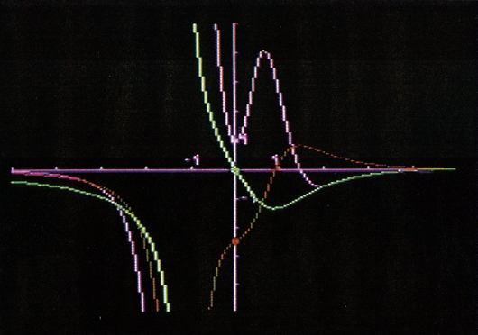
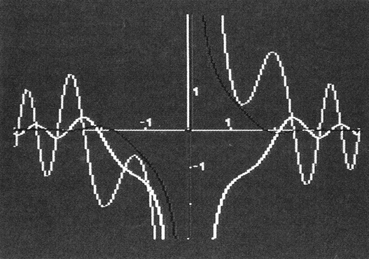
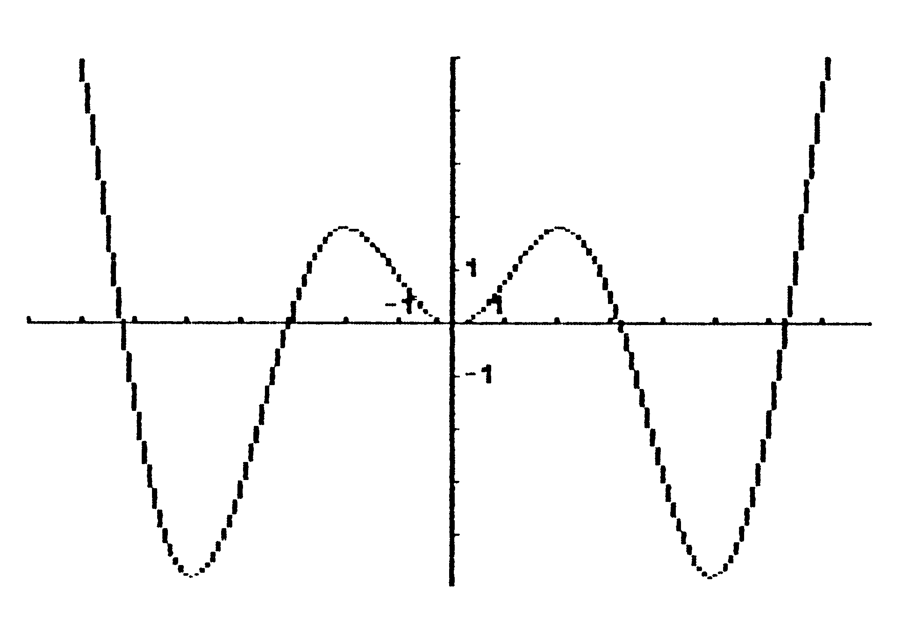
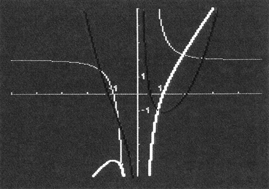
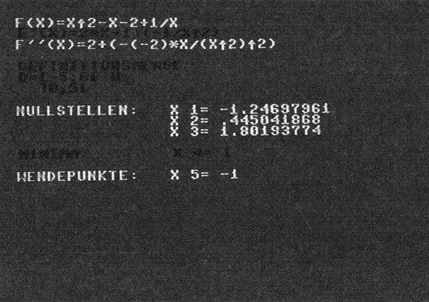

Nie wieder Probleme mit Kurvendiskussionen
Kurvendiskussionen im Mathematik-Unterricht sind eine mühsame Angelegenheit und Fehler schleichen sich schnell ein. Mit dieser Anwendung des Monats wird alles anders, denn der C 64 nimmt Ihnen die Arbeit ab — und macht keine Fehler!
Die Kurvendiskussion ist ein umfassendes Stoffgebiet der Mathematik. Es wird deshalb kaum einen Schüler der Oberstufe im Gymnasium geben, der sich nicht schon über dieses Thema geärgert hat, besonders weil Kurvendiskussionen ein beliebter Stoff für Hausaufgaben sind.
Sehr ärgerlich kann es werden, wenn die Ableitung der zu diskutierenden Funktion durch einen Rechenfehler einen nicht mehr überschaubaren Umfang annimmt oder wenn die Skizzierung des Graphen durch falsch berechnete Werte ebenfalls falsch wird beziehungsweise gar nicht möglich ist (beispielsweise, wenn eine in Realzahlen definierte Funktion ohne Extrema zwei Nullstellen besitzt). Derartige Rechenfehler lassen sich oft nur nach sehr langem Suchen finden, manchmal auch gar nicht. Doch mit Ihrem C 64 wird jetzt alles anders.
Das Programm »Kudi 64« ist eine echte Hilfe für streßgeplagte Schüler und alle, die etwas mit Kurvendiskussion zu tun haben. Sogar Mathelehrern und Studenten an der Universität wird es nützliche Dienste erweisen. Auch das Auffinden von Fehlern wird durch »Kudi 64« wesentlich erleichtert.
Optische Darstellung mit Ableitungen
Neben einer optischen Darstellung der Funktion auf dem Bildschirm mit erster und zweiter Ableitung (siehe Bild 1) berechnet das Programm Nullstellen, Extrema, Wendepunkte und Terrassenpunkte. Es bestimmt weiterhin die Ableitungen der Funktion sowie deren Definitionsmenge. Auch eine Berechnung der Schnittpunkte zweier Funktionen, die insbesondere bei Winkelfunktionen oft große Schwierigkeiten bereitet, ist durch Diskutieren der Differenz beider Funktionen möglich.

Das Programm ist auf dem Spezialgebiet der Kurvendiskussion zur absoluten Spitzenklasse zu zählen und besticht durch seine Anwendungsfreundlichkeit und hohe Zuverlässigkeit. Selbst kritische Stellen wie Lücken in der Funktion werden erkannt und angezeigt (Bild 1, bei x=0).
Neun neue Mathe-Befehle
Mit neun neuen Befehlen zur Kurvendiskussion ist gleichzeitig eine Basic-Erweiterung vorhanden, die Sie in eigene Basic-Programme einbinden oder im Direkt-Modus eingeben können. Acht der neun Befehle sind sogar auf die Funktionstasten gelegt.
Ein besonderer Komfort ist, daß Sie berechnete Werte in eigenen Basic-Programmen weiterverarbeiten können. Mit den neun neuen Befehlen können Sie eine Funktion auf dem Bildschirm grafisch darstellen (mit und ohne Ableitungen), eine Hardcopy vom Grafik-Bildschirm machen oder nur die mathematischen Ableitungen berechnen lassen. Nach einem bestimmten Befehl führt der C 64 sogar eine komplette Kurvendiskussion durch und gibt die Ergebnisse auf dem Bildschirm aus.
(Heino Sand/kn)Nie wieder Probleme mit Kurvendiskussionen
Haben Sie schon einmal in mühsamer Kleinarbeit eine Kurvendiskussion mit allen Ableitungen durchgeführt und dennoch war ein Fehler enthalten, der alle Arbeit zunichte machte. Das kann jetzt nicht mehr passieren, denn »Kudi 64« bringt Ihnen das richtige Ergebnis.
Dieses vollkommen in Maschinensprache geschriebene Programm wird Ihnen eine große Hilfe sein, wenn Sie irgend etwas mit Kurvendiskussionen zu tun haben. Geben Sie das Programm »Kudi 64« (Listing 1) mit Hilfe des MSE in Ihren C 64 ein und speichern Sie es. Starten können Sie das Programm ganz einfach mit RUN. Eine integrierte SYS-Zeile übernimmt den Aufruf des Maschinenprogramms. Gleich anschließend erscheint die Meldung »READY« auf dem Bildschirm. Rein äußerlich hat sich nichts verändert. Ihnen stehen jedoch nun neun leistungsstarke neue Basic-Befehle zur Verfügung. Sollten Sie zwischendurch einen Reset auslösen, so können Sie das Programm mit »SYS 2500« neu starten. Gleiches gilt, wenn Sie einen NMI-Interrupt mit <RUN/STOP + RESTORE> auslösen, während der Computer einen der neuen Befehle abarbeitet. Derartige Fälle sollten Sie jedoch vermeiden, da eine einwandfreie Funktion der neuen Befehle dann nicht mehr garantiert werden kann. Kommen wir aber nun zu den neuen Befehlen.
Neun neue Basic-Befehle können Sie in eigene Basic-Programme einbinden oder im Direkt-Modus eingeben. In der Tabelle 1 finden Sie alle Befehle im Überblick. Acht der neun neuen Befehle sind auf Funktionstasten gelegt. Die Befehle werden im Direkt-Modus sofort nach Drücken der Taste <RETURN> ausgeführt. Sind sie in Basic-Programme eingebunden, so werden sie nach <RUN> abgearbeitet. Im Gegensatz zu den Standardbefehlen des Basic ist eine Abkürzung der neuen Befehle nicht zulässig. Wenn Sie sich dennoch das Eintippen eines Befehlswortes ersparen wollen, können Sie die in Tabelle 1 aufgeführten Funktionstasten verwenden. Daraufhin erscheint das entsprechende Befehlswort sofort auf dem Bildschirm.
Eine weitere Abweichung vom Standard-Basic ergibt sich beim Gebrauch des Befehls THEN. Die Verwendung eines der neuen Befehle unmittelbar nach diesem Befehl führt zu einem »SYNTAX ERROR« Sollten Sie eine derartige Befehlsfolge dennoch benötigen, so müssen beide Befehle durch einen Doppelpunkt getrennt werden wie im folgenden Beispiel:
50 IF A=1 THEN : DERIVE XEinige der neuen Befehle verarbeiten Zahlen. Diese können wie im Basic auf drei verschiedene Arten eingegeben werden:
— als Konstante (Beispiel: HIRES 2)
— als Variable (Beispiel:A=2 : HIRES A)
— als Term (Beispiel: A=2 : HIRES SQR(9)-A)
Den Befehlen DERIVE, DRAW, DISCUSS und ADD muß eine Funktion f(x) folgen. Beachten Sie bitte dabei, daß Sie diese Funktionen in der Syntax der Sprache Basic eingeben müssen. Sollten Sie im Umgang damit unsicher sein, so lesen Sie bitte im Handbuch des C 64 ab den Seiten 24 und 125 die entsprechenden Kapitel nach.
In der Tabelle 2 finden Sie alle numerischen Basic-Grundfunktionen, die von den vier Befehlen bearbeitet werden können. Werden andere numerische Funktionen benutzt, so meldet der Interpreter »SYNTAX ERROR« oder das Programm mißdeutet eine solche Funktion als dimensionierte Variable.
Ferner ist zu beachten, daß die Funktions-Variable bei allen vier Befehlen immer »X« sein muß. Hier ein Beispiel für ein zulässiges Programmteil:
10 DEFFNA(X)=SIN(X)
50 Z=3
100 DRAW SQR(FNA(X+Z))*XDie Länge und Verschachtelungstiefe eines Terms sind nur durch die Einschränkungen des Interpreters Grenzen gesetzt (beispielsweise maximal 80 Zeichen pro Eingabezeile). Zu beachten ist jedoch, daß die Ableitungen eines eingegebenen Terms, die von allen vier Befehlen berechnet werden, bestimmte Voraussetzungen erfüllen müssen, um bearbeitbar zu bleiben. So dürfen Ableitungen beispielsweise die Länge von 255 Zeichen nicht übersteigen; andernfalls wird ein »Formula too Complex Error« gemeldet.
Weitere Einschränkungen werden später näher beschrieben.
Nun aber mehr über die neuen Basic-Befehle.
Neun leistungsstarke Befehle
DERIVE: Dieser Befehl berechnet die erste und zweite Ableitung der eingegebenen Funktion f(x). Wird dieser Befehl im Direktmodus gebraucht, so werden die berechneten Ableitungen sofort auf dem Bildschirm ausgegeben. Hier ein Beispiel:
Eingabe: DERIVE X↑3 <RETURN>
Ausgabe: F(X) = X↑3
F'(X) = 3*X↑2
F''(X)= 6*X
Ist der DERIVE-Befehl Teil eines Basic-Programmes, so können Sie die zu berechnenden Ableitungen mit Fn definierten, wobei n den Grad der Ableitung ist (F0 = Ausgangsfunktion, F1 = 1. Ableitung, etc.). Ein Beispiel für die erste Ableitung der Funktion x3 an der Stelle x=4:
Eingabe:
10 DERIVE X↑3
20 PRINT "F'(4) =";FNF1(4)Ausgabe nach RUN:
F'(4) = 48
Die zu berechnenden Ableitungen können Sie auch frei wählen, indem Sie zwischen dem Befehl DERIVE und der Funktion in eckigen Klammern den gewünschten Ableitungsgrad oder den niedrigsten und höchsten Ableitungsgrad angeben. Wenn Sie beispielsweise die zweite bis vierte Ableitung der Funktion f(x)=x↑3 benötigen, dann geben Sie »DERIVE [2,4] X↑3« ein. Den Ableitungsgrad können Sie dabei maximal bis einschließlich der neunten Ableitung definieren.
| DISCUSS | F1 | (Diskutieren einer Funktion) |
| ADD | F2 | (Hinzufügen einer Kurvendiskussion) |
| DRAW | F3 | (Zeichnen einer Funktion) |
| CLEAR | F4 | (Löschen des Grafikbildschirms) |
| BORDER | F5 | (Neusetzen der betrachteten Abszissen- und Ordinatenabschnitte) |
| COLOUR | F6 | (Neusetzen der Farben) |
| DERIVE | F7 | (Ableiten einer Funktion) |
| HIRES | F8 | (Anschalten des Grafikbildschirms) |
| COPY | (Erstellen einer Hardcopy) |
| Sinusfunktion | SIN | (u(x)) |
| Cosinusfunktion | COS | (u(x)) |
| Tangensfunktionen | TAN | (u(x)) |
| Arcustangensfunktion | ATN | (u(x)) |
| e-Funktion | EXP | (u(x)) |
| natürliche Logarithmusfunktion | LOG | (u(x)) |
| Quadratwurzelfunktion | SQR | (u(x)) |
| Betragfunktion | ABS | (u(x)) |
| Signumfunktion | SGN | (u(x)) |
| selbstdefinierte Funktion | FNxx | (u(x)) |
| Parameter | Bedeutung | Grundeinstellung |
|---|---|---|
| 1. Parameter | Farbe der Ausgangsfunktion | Schwarz |
| 2. Parameter | Farbe der ersten Ableitung | Weiß |
| 3. Parameter | Farbe weiterer Ableitungen sowie des Achsenkreuzes | Hellblau |
| 4. Parameter | Farbe des Hintergrundes | Dunkelblau |
| 5. Parameter | Farbe des Bildschirmrahmens | Hellblau |
| Parameter | Bedeutung | Grundeinstellung |
|---|---|---|
| 1. Parameter | linke Grenze der Abszisse | -8 |
| 2. Parameter | rechte Grenze der Abszisse | 8 |
| 3. Parameter | untere Grenze der Ordinate | -5 |
| 4. Parameter | obere Grenze der Ordinate | 5 |
| Variablenname | Bedeutung |
|---|---|
| NS(a) | (a)te berechnete Nullstelle |
| NS | Anzahl der berechneten Nullstellen |
| MI(a) | (a)tes berechnetes Minimum |
| MI | Anzahl der berechneten Minima |
| MA(a) | (a)tes berechnetes Maximum |
| MA | Anzahl der berechneten Maxima |
| WP(a) | (a)ter berechneter Wendepunkt |
| WP | Anzahl der berechneten Wendepunkte |
| TP(a) | (a)ter berechneter Terassenpunkt |
| TP | Anzahl der berechneten Terassenpunkte |
DRAW: Mit Hilfe des DRAW-Befehls werden Funktionen und deren Ableitungen auf dem Bildschirm grafisch dargestellt. Auch bei diesem Befehl können die gewünschten Ableitungen wie bei DERIVE in eckigen Klammern angegeben werden. Nach »DRAW [0]« wird nur die Grundfunktion dargestellt. Ohne eine Klammerangabe wird die Grundfunktion und deren erste und zweite Ableitung gezeichnet. Der Aufbau des Grafikbildes kann durch Drücken der Taste <RUN/STOP> abgebrochen werden. Ist die Grafik fertiggestellt, können Sie durch Drücken einer beliebigen Taste in den Eingabemodus zurückkehren. Der vorherige Bildschirminhalt bleibt dabei erhalten, so daß bei erneuter Anwendung des DRAW-Befehls die bereits auf dem Bildschirm vorhandene Grafik mit der neuen Funktion überlagert wird. Drücken Sie <RUN/STOP>, so wird der Grafikbildschirm verlassen und gleichzeitig gelöscht.
COLOUR: Mit dem Befehl COLOUR können Sie die Bildschirmfarben verändern. Im Grundzustand, also unmittelbar nach dem Starten des Programms, ist eine bestimmte Farbgebung für die Bildschirmgrafik vorgegeben (siehe Tabelle 3). Mit dem Befehl COLOUR, dem bis zu fünf durch Komma getrennte ganze Zahlen zwischen 0 und 15 folgen dürfen, können Sie alle Farbvorgaben ändern. Die Bedeutung für die einzelnen Parameter können Sie der Tabelle 3 entnehmen.
Folgen dem COLOUR-Befehl weniger als fünf Parameter so werden die angesprochenen Farben nach obiger Tabelle geändert, alle anderen nehmen wieder den Grundzustand an. Welche Farbe zu welcher Zahl gehört, können Sie dem C 64-Handbuch entnehmen. Ein Beispiel: Geben Sie COLOUR 7,0 ein und drücken <RETURN>, dann hat künftig die Ausgangsfunktion die Farbe Gelb, die erste Ableitung die Farbe Schwarz. Alle anderen Farben nehmen den Grundzustand an. Der Befehl COLOUR ohne Parameter bewirkt einen »Reset« für alle Farben. Übrigens sollten Sie Farbe Schwarz als Hintergrund vermeiden, da beispielsweise bei den Befehlen DERIVE und DISCUSS einige Ableitungen immer in Schwarz geschrieben werden. Sie würden diese Anteile dann auf dem Bildschirm nicht sehen können.
CLEAR: Dieser Befehl löscht den Grafikbildschirm und alle gespeicherten Funktionen. Er kann beispielsweise vor dem DRAW-Befehl angewendet werden, wenn sich im Speicher eine nicht mehr benötigte Grafik befindet und Sie eine neue Funktion bearbeiten wollen.
BORDER: Der BORDER-Befehl erlaubt Ihnen, die Grenzen, innerhalb derer eine Funktion auf dem Bildschirm dargestellt wird, zu ändern. Dem Befehl können bis zu vier Parameter folgen. Die Bedeutung der einzelnen Parameter und wie sie nach dem Start eingestellt sind, ersehen Sie in der Tabelle 4. Beide Koordinatenachsen müssen aber in jedem Fall sichtbar bleiben, das heißt, der erste und dritte Parameter dürfen nur negative Werte oder den Wert Null, der zweite und vierte Parameter nur positive Werte oder den Wert Null annehmen. Ist dies nicht der Fall, wird ein Fehler gemeldet.
Der BORDER-Befehl ist so konzipiert, daß bei weniger als vier Parametern die nicht festgelegten Grenzen sinnvoll an die angegebenen Grenzen angepaßt werden. Die folgenden fünf Varianten haben daher unterschiedliche Wirkungen:
BORDER (ohne Parameter): Alle Grenzen werden in den Grundzustand zurückgesetzt.
BORDER a (ein Parameter): Die linke Grenze nimmt den Wert a an. Der Wert des rechten Randes wird so verändert, daß das erstellte Bild gegenüber dem Bild, das im Grundzustand der Grenzen gezeichnet wurde, nur verschoben, jedoch nicht gestreckt wird. Der Wert der rechten Grenze ist somit um 16 größer als der der angegebenen linken. Für die Begrenzungen der Ordinate erfolgt ein Reset.
BORDER a,b (zwei Parameter): Bei der Festlegung beider Grenzen der X-Achse kann der Maßstab des Bildes verändert werden. Die Grenzen der Y-Achse werden deshalb so geändert, daß sich keine Verzerrung des Bildes ergibt, das heißt, eine Einheit der X-Achse nach wie vor so groß wie die der Y-Achse ist. Die X-Achse bleibt in der Mitte des Bildes.
BORDER a,b,c (drei Parameter): Dieser Befehl bewirkt nahezu dasselbe, wie der BORDER-Befehl mit zwei Parametern. Durch Angabe der unteren Begrenzung kann das Bild jedoch längs der Y-Achse verschoben werden. Eine Verzerrung findet nicht statt.
BORDER a,b,c,d (vier Parameter): Alle Begrenzungen des Bildes werden neu festgelegt.
Der BORDER-Befehl berechnet darüber hinaus eine günstige Beschriftung der Koordinatenachsen. Beschriftet wird das Achsenkreuz in ganzen Zehnerpotenzen und zwar jeweils der erste Einheitsstrich nach dem Ursprung.
Die gewählten Grenzen bleiben bis zur erneuten Anwendung des BORDER-Befehls erhalten.
Sie können sich mit Hilfe dieses Befehls interessante Bereiche einer Funktion herausholen. Im Bild 1 sehen Sie einen mit BORDER -4,4,-3,3 ausgesuchten Bereich der Funktion f(x)=sin(x↑2)/x↑3. Schauen Sie sich doch selbst einmal den Ausschnitt um die Y-Achse für die Funktion sin(1/x) näher an. Noch ein kleiner Tip, verwenden Sie für Zahlen, die kleiner als eins sind, bitte einen Punkt bei der Eingabe, kein Komma.

HIRES: Mit diesem Befehl können Sie eine bereits erstellte Grafik nochmals auf dem Bildschirm sichtbar machen. Voraussetzung ist natürlich, daß der Grafikspeicher in der Zwischenzeit nicht gelöscht wurde (beispielsweise durch Abbruch von DRAW mit <RUN/STOP> oder durch den Befehl CLEAR). Dem HIRES-Befehl muß eine Zahl zwischen 1 und 255 folgen, die angibt, wie lange das Bild zu sehen sein soll. Eine Einheit entspricht hierbei etwa vier Sekunden. Nach der Eingabe von »HIRES 3« und <RETURN>ist das im Grafikbildschirm befindliche Bild etwa 12 Sekunden lang auf dem Bildschirm sichtbar. Die Zeitschleife können Sie durch Betätigen einer beliebigen Taste vorzeitig beenden.
COPY: Dieser Befehl erstellt eine Hardcopy des Grafikbildschirms auf dem angeschlossenen Drucker. Voraussetzung ist natürlich, daß Ihr Drucker grafikfähig ist und über den bei Commodore-Druckern üblichen CHR$(8) zum Einschalten einer Sieben-Punkt-Matrix bei Sekundäradresse Null und Geräteadresse Vier verfügt. Vergewissern Sie sich diesbezüglich am besten im Handbuch Ihres Druckers beziehungsweise in den Unterlagen für Ihr Interface. Achten Sie vor dem Drucken darauf, daß der Kanal mit der logischen Filenummer vier, den die COPY-Routine benutzt, geschlossen und der Drucker druckbereit ist. Sind alle diese Voraussetzungen erfüllt, gibt der Drucker am äußersten linken Rand des bedruckbaren Papierraums eine Kopie des Grafikbildschirms mit 320 Punkten Breite und 200 Punkten Tiefe aus. Im Bild 2 sehen Sie eine Hardcopy des Grafikbildschirms, der durch DRAW[0] SIN(X)*X hervorgerufen wurde.

Folgt dem Befehl COPY eine ganze Zahl a (0 bis 255), so wird die Hardcopy um a Zeichenbreiten vom linken Rand entfernt gedruckt. Sie haben somit die Möglichkeit, Ihre Hardcopy in der Mitte des Papieres zu plazieren.
DISCUSS: Der DISCUSS-Befehl bildet den Höhepunkt der Befehlserweiterung. Wie der DRAW-Befehl zeichnet DISCUSS die nach dem Befehlswort angegebene Funktion f(x) mit der ersten und zweiten Ableitung. Er löscht jedoch automatisch den vorherigen Bildschirm. Gleichzeitig werden die Nullstellen, Extrema, Wendepunkte und die Definitionsmenge im gezeichneten Bereich berechnet. Daher entsteht bei der Ausgabe auf den Bildschirm an den relevanten Stellen eine Pause. Die Erstellung der Grafik können Sie durch <RUN/STOP> unterbrechen, jedoch nicht das Berechnen der Nullwerte. Die berechneten Werte und Ableitungen werden auf dem Bildschirm ausgegeben, wenn Sie nach dem Erstellen der Grafik eine beliebige Taste drücken, außer der Taste <RUN/STOP>, die das Programm unterbricht und den Bildschirm löscht, und der <RETURN>-Taste, die den DISCUSS-Befehl verläßt und den nächsten Befehl ausführt. Nach nochmaligem Drücken einer anderen Taste wird bei längeren Berechnungen auf die nächste Bildschirmseite umgeschaltet oder der Grafikbildschirm erscheint wieder. Zwischen Grafik und Rechenergebnissen können Sie immer wieder umschalten. Ein Beispiel für die Ergebnisse einer Kurvendiskussion sehen Sie in den Bildern 3a und 3b. Die Ableitungen der Funktionen werden wie bei dem Befehl DERIVE nicht weiter mathematisch zusammengefaßt.


Wenn Sie den DISCUSS-Befehl in ein Programm einbinden, reagiert der Computer auf den Befehl etwas anders. Zunächst wird wie gewohnt das Bild gezeichnet. Ist dies beendet, werden die berechneten Ableitungen wie bei DERIVE im Programmodus als Basic-Funktionen definiert, die berechneten Nullstellen, Extrema und Wendepunkte werden bestimmten dimensionierten Variablen zugeordnet. In der Tabelle 5 finden Sie die Variablennamen mit ihren Bedeutungen.
Hier ein Beispiel für ein Basic-Programm mit dem DISCUSS-Befehl:
10 DISCUSS X↑ 2-X-2+1/X
15 PRINT "F (1)=" ; FNF0(1)
20 PRINT "F' (1)=" ; FNF1(1)
25 PRINT "F''(1)=" ; FNF2(1)
30 PRINT
35 PRINT "NULLSTELLEN:"
40 FOR I =1 TO NS
45 PRINT "NS";I;"(";NS(I);"; 0)"
50 NEXT I:PRINT
55 PRINT "MINIMA:"
60 FOR I = 1 TO MI
65 PRINT "MI";I;"(";MI(I);";";FNF0(MI(I));")"
70 NEXT I:PRINT
75 PRINT "WENDEPUNKTE:"
80 FOR I = 1 TO WP
85 PRINT "WP";I;"(";WP(I);";";FNF0(WP(I));")"
90 NEXT INach RUN wird die Funktion auf dem Bildschirm dargestellt. Danach erscheint sofort:
F (1)=-1
F' (1)= 0
F'' (1)= 4
NULLSTELLEN:
NS 1(-1.2469796; 0)
NS 2( .445041868; 0)
NS 3( 1.80193773; 0)
MINIMA:
MI 1( 1;-1)
WENDEPUNKTE:
WP 1(-1;-1)
Auch beim DISCUSS-Befehl kann zwischen dem Befehlswort und der Funktion in eckigen Klammern der gewünschte Ableitungsgrad und die linke, rechte Grenze der gewünschten Ableitungsgrade angegeben werden. Denken Sie aber daran, daß zur Berechnung von Nullstellen die Ausgangsfunktion, für Extrema die erste Ableitung, für Wendepunkte die zweite Ableitung und für Terassenpunkte die erste und zweite Ableitung notwendig sind. Werden diese Ableitungsgrade durch den Ausdruck in eckigen Klammern ausgenommen, können die genannten zugehörigen Werte nicht berechnet werden.
ADD: Der Befehl ADD erlaubt, zu einer bereits mit DRAW oder DISCUSS erstellten Funktion eine weitere hinzuzufügen, die dabei diskutiert wird. Auf diese Weise ist es möglich, zwei Funktionen miteinander zu vergleichen.
Der Unterschied zwischen dem ADD- und DISCUSS-Befehl besteht darin, daß der DISCUSS-Befehl vor dem Erstellen der Grafik den Bildschirm löscht, während ADD eine Funktion über das im Grafikspeicher vorhandene Bild zeichnet. Beim ADD-Befehl bleiben auch die zuvor berechneten und noch gespeicherten Werte erhalten und werden beim Erstellen der Tabelle auf dem Bildschirm mit ausgegeben. Der ADD-Befehl unterscheidet sich auch dadurch von DISCUSS, daß die berechneten Ableitungen nacheinander und nicht gleichzeitig gezeichnet werden. Der DISCUSS-Befehl ist daher schneller als der ADD-Befehl.
Auch im Programm-Modus gibt es fast keine Unterschiede. Beachten Sie aber, daß die zweite auf dem Bildschirm befindliche Funktion den Namen g(x) statt f(x)) trägt. So müssen sie im Programm beispielsweise »PRINT "G(1)= ";FNG0(1)« eingeben, wenn Sie den Funktionswert der zweiten Funktion an der Stelle x=1 berechnen wollen. Die erste Funktion f(x) steht Ihnen somit nach wie vor zur Verfügung, während deren berechnete Nullstellen, Maxima und Wendepunkte verlorengehen. Benötigen Sie diese dennoch, so müssen sie vor dem ADD-Befehl in eine andere Variable übertragen werden.
Sehr komfortabel ist bei »Kudi 64« auch, daß Definitionsgrenzen und damit auch Definitionslücken selbständig erkannt werden.
Es ist aber auch wichtig, die Grenzen des Programms zu kennen.
Wo liegen die Grenzen des Programms?
Es wurde zwar versucht, sämtliche Eventualitäten zu berücksichtigen, dennoch hat alles seine Grenzen.
Für jede Ableitungen wird ein Speicherplatz von 255 Byte zur Verfügung gestellt. Dabei wird ein Basic-Funktionswort wie SIN als Token abgelegt und belegt somit nur ein Zeichen. Das Überschreiten der zulässigen Länge einer Ableitung führt zu einem »Formula too Complex Error«.
Für die Speicherung aller Grundfunktionen, Ableitungen und der Funktionen zur Bestimmung von Definitionslücken sind insgesamt 3072 Byte vorhanden. Es können daher mindestens zwölf Funktionen gespeichert werden. Zur Verwaltung der Funktionen ist ein Speicherplatz von 190 Byte reserviert. Da eine Funktion fünf Verwaltungsbyte benötigt, können maximal 38 Funktionen gespeichert werden.
Eine weitere Grenze besteht bei der Verschachtelungstiefe einer Funktion. Hier ist zu bedenken, daß der Interpreter für die Auflösung verschachtelter Terme (beispielsweise Klammerausdrücke) den Prozessorstack verwendet. Der hat aber nur eine relativ kleine Speicherkapazität. Es ergibt sich daher eine höchstzulässige Verschachtelungstiefe von neun Verschachtelungen (beispielsweise acht Klammerebenen und einmal »Punkt vor Strich«). Wird diese Grenze überschritten, meldet der Interpreter einen »Out of Memory Error«.
Funktionen und deren Ableitungen werden in der Regel soweit fehlerfrei auf dem Bildschirm dargestellt, wie es die Auflösung des Grafikbildschirms zuläßt. Extrem große Steigungen können allerdings zu entstellten Grafiken führen. Ein Beispiel dafür ist die bereits erwähnte Funktion sin(1/x). Hier hilft normalerweise eine Änderung des Darstellungsbereiches mit dem BORDER-Befehl.
Ferner ist es möglich, daß eine Funktion, die sich zur Definitionsgrenze (Lücke) hin einer Konstanten annähern müßte, kurz vor oder hinter der Definitionslücke gegen Unendlich strebt. Ein Beispiel hierfür ist die Funktion f(x)=sin(x)/x.
Dies ist insbesondere bei Winkelfunktionen auf Rundungsfehler des Interpreters zurückzuführen und kann somit nicht beseitigt werden.
Auf Rundungsfehler ist auch eine geringfügig falsche oder ausbleibende Positionierung der »Definitionslückenmarkierung« zurückzuführen.
Eine ungünstige Wahl der Achsenabschnitte kann auch Fehler bei der Berechnung der Nullwerte hervorrufen. Wenn beispielsweise Nullstellen so nah aneinander liegen, daß sie in der grafischen Darstellung aufeinanderfallen. In einem solchen Fall kann nur eine dieser Nullstellen berechnet werden. Oder der Nullwert liegt in unmittelbarer Umgebung der rechten Grenze der X-Achse (aus diesem Grund ist dieser Wert auch nicht in der Definitionsmenge enthalten). Eine Änderung der Achsenabschnitte mit dem BORDER-Befehl schafft hier Abhilfe.
Sämtliche Nullwerte werden auf acht gültige Stellen genau berechnet. Die ebenfalls ausgegebene neunte Ziffer kann aufgrund eines Rundungsfehlers des Interpreters geringfügig vom tatsächlichen Wert abweichen. In Extremfällen ist es daher denkbar, daß ein sehr nahe bei Null liegender X-Wert bereits als Null gedeutet wird.
Grobe Fehldeutungen, wie beispielsweise die Verwechslung von Minima und Maxima, können nicht vorkommen. Möglich wäre dagegen die Zuordnung einer Nullstelle der ersten Ableitung zu einem Extremum, obwohl auch die zweite Ableitung an dieser Stelle den Wert Null hat. Nullstellen der ersten und zweiten Ableitung, die kein Extremum oder Wendepunkt darstellen, werden deshalb unter der Bezeichnung "WEITERE NULLSTELLEN VON F'(X)" beziehungsweise F''(X) zusätzlich ausgegeben.
So, nun kennen Sie auch alle Eventualitäten des Programms und einem Einsatz, der Ihnen sicher noch viel Freude bereiten wird, steht nichts mehr im Wege.
(Heino Sand/kn)